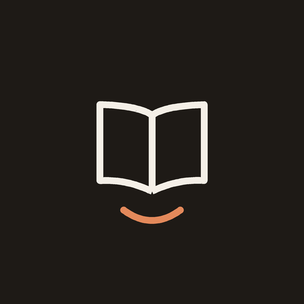

Разказвач
Книги, статии и цели теми, превърнати в живо разказване — с естествен български глас.
Какво прави
Жив разказвач
Gemini чете с интонация като професионален разказвач — избирате глас и стил.
Текст → аудио файл
Дайте тема или текст — получавате документален аудиоразказ като файл, готов за споделяне.
Вашите книги
EPUB, PDF, FB2, DOCX, TXT — бележки и препратки не се четат, мястото се помни.
Икономично
Безплатните лимити първо; цяла книга може да се озвучи нощем на половин цена.
Инсталиране
- Изтеглете файла с бутона горе.
- Отворете го от известието или от „Изтегляния“. Ако телефонът попита — разрешете инсталиране от браузъра.
- Готово. При нова версия просто инсталирайте отгоре — книгите и настройките остават.
Линкът винаги води до последната версия — сглобява се автоматично при всяка промяна.